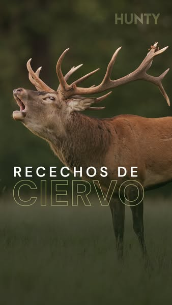
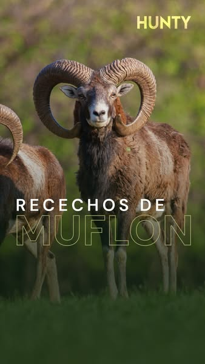
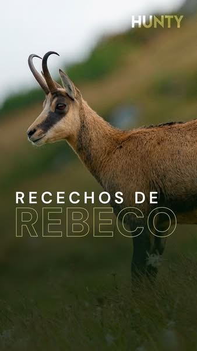
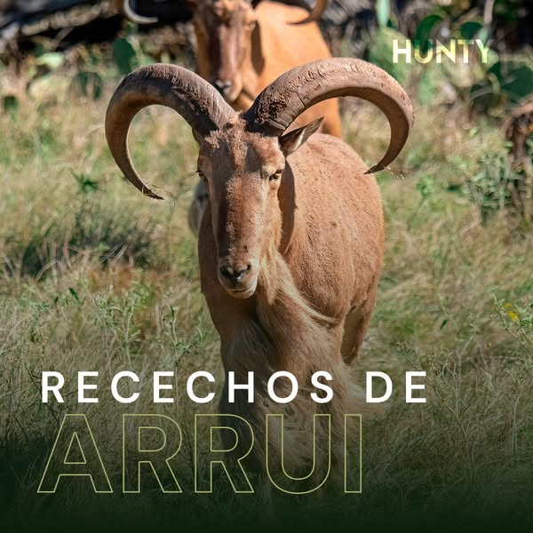
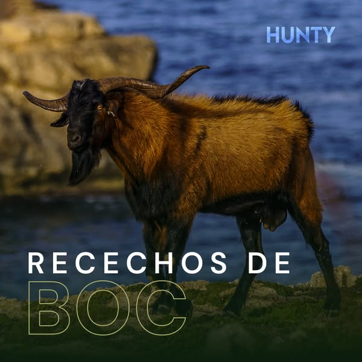

Línea 1
«Recechos de [especie]»
página HUNTY7 anunciosactivos desde el 17 y el 22 de julio

⚠ Habla de berrea
135017580727315817-jul✓ Sin error detectado
204395952958011517-jul✓ Sin error detectado
2811734015118376817-jul
⚠ Lleva a corzo
137173419159860722-jul
✓ Sin error detectado
100897835861611322-jul
✓ Sin error detectado
178332332282753222-jul
✓ Sin error detectado
215329285857963322-julTexto (ej. corzo): «El duende del bosque. Esquivo, difícil y de los más deseados 🎯 Encuentra tu rececho de corzo en Hunty.» · Titular: «Recechos de Corzo» · Descripción: «Descubre tu próxima aventura» · Botón: Ver detalles · Destino: hunty.es/especies/<especie>?referred_by=…
FuncionaCreatividad cuidada y coherente. La especie como gancho y un lenguaje de cazador que no suena a anuncio.
FallaNo filtran: sin precio, sin fecha y sin «para quién», atraen a todo el que disfruta de la foto. El destino es la página de la especie con todas las modalidades (ciervo: 417 cacerías, monterías incluidas), no los recechos. El de ciervo habla de berrea, que ya está terminando. Llevan tres meses con la misma pieza.